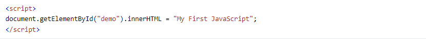
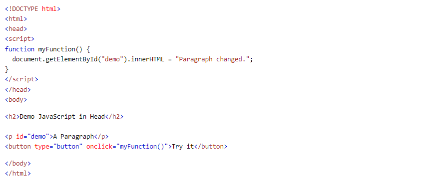
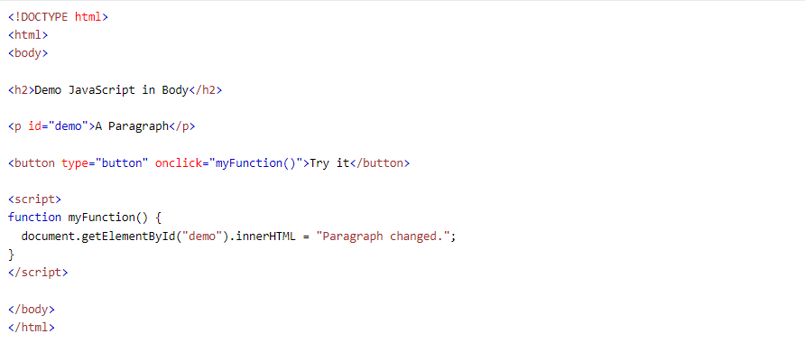
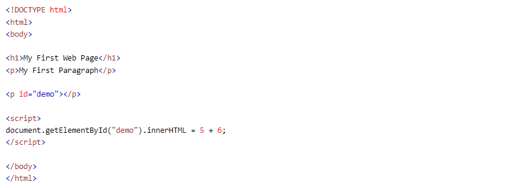
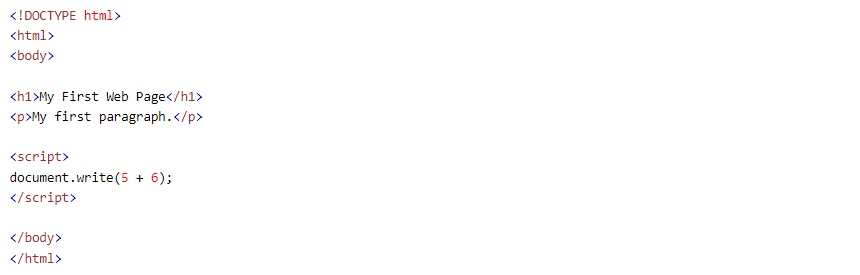
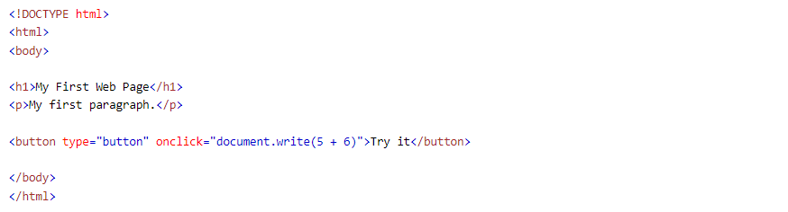

JavaScript is the world's most popular programming language.
JavaScript is the programming language of the Web.
JavaScript is easy to learn.
This tutorial will teach you JavaScript from basic to advanced.
With our "Try it Yourself" editor, you can edit the source code and view the result.
One of many JavaScript HTML methods is getElementById().
The example below "finds" an HTML element (with id="demo"), and changes the element content (innerHTML) to "Hello JavaScript":
JavaScript accepts both double and single quotes:
In HTML, JavaScript code is inserted between <"script"> and <"/script"> tags.

Old JavaScript examples may use a type attribute: <"script type="text/javascript""">.
The type attribute is not required.
JavaScript is the default scripting language in HTML.
A JavaScript function is a block of JavaScript code, that can be executed when "called" for.
For example, a function can be called when an event occurs, like when the user clicks a button.
You will learn much more about functions and events in later chapters.
You can place any number of scripts in an HTML document.
Scripts can be placed in the <"body">, or in the <"head"> section of an HTML page, or in both.
In this example, a JavaScript function is placed in the
section of an HTML page.
In this example, a JavaScript function is placed in the <"body"> section of an HTML page.
The function is invoked (called) when a button is clicked:

Placing scripts at the bottom of the
JavaScript can "display" data in different ways:
To access an HTML element, JavaScript can use the document.getElementById(id) method.
The id attribute defines the HTML element. The innerHTML property defines the HTML content:

Changing the innerHTML property of an HTML element is a common way to display data in HTML.
For testing purposes, it is convenient to use document.write():

Using document.write() after an HTML document is loaded, will delete all existing HTML:

The document.write() method should only be used for testing.